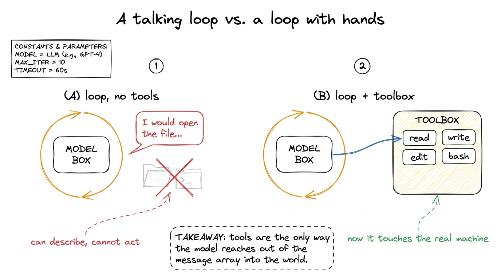
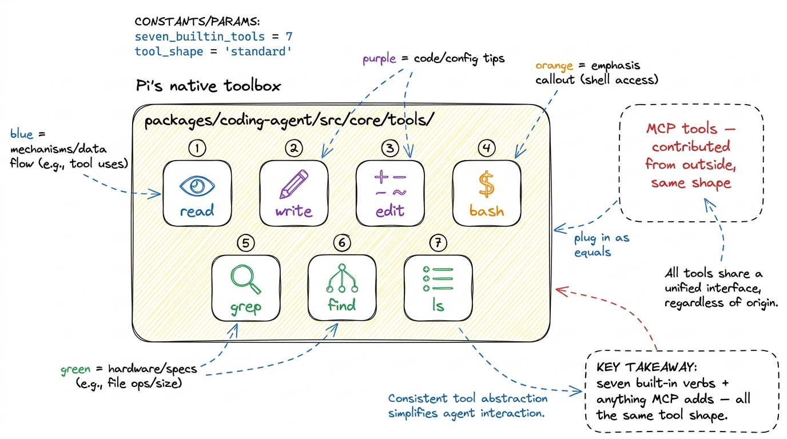
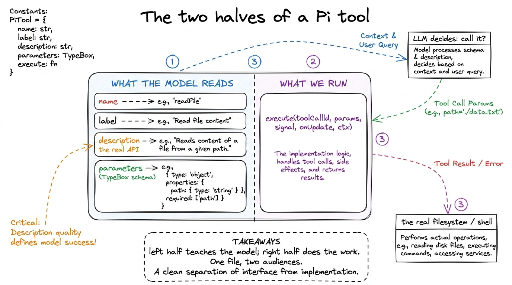
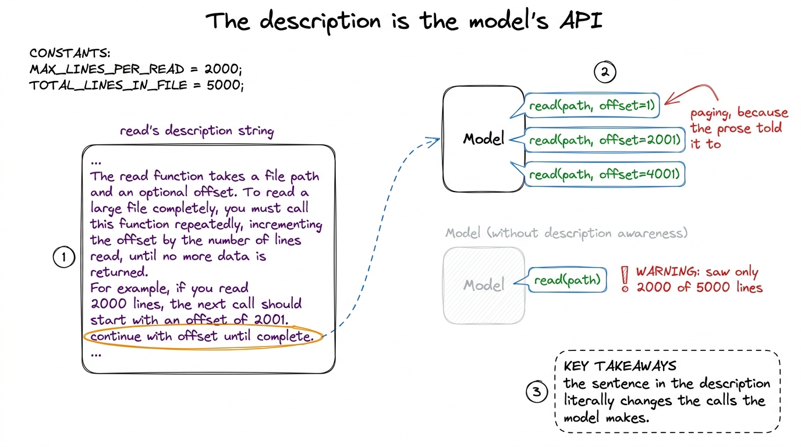

The toolbox: giving Pi hands BUILD
The loop we built in the last chapter is a marvel and a prisoner. It can decide, it can plan, it can hold a whole conversation in its head — and it can do exactly nothing to your machine. Ask it to fix a failing test and it will describe, in beautiful prose, the file it would like to open. But it cannot open it. A loop that can only talk is a chatbot. This chapter is where Pi grows hands.

figure rendering · Without tools the loop can only narrate. The toolbox is the single briThe question this chapter answers is deceptively simple: what, exactly, is a tool? Not the idea of one — the actual object Pi hands to the model and runs on your behalf. It turns out a Pi tool has two halves that live in one definition, and the more surprising of the two is the half you might think is decoration.
Where Pi keeps its hands
Pi's built-in tools all live in one folder — packages/coding-agent/src/core/tools/ — and there are seven of them: read, write, edit, bash, grep, find, and ls. That is the whole native toolbox.1 Notice how ordinary the list is. It is almost exactly the set of verbs you would use in a terminal yourself: look at a file, change a file, run a command, search. Pi does not give the model exotic powers — it gives it your powers, mediated. Everything else Pi can do — talk to a database, drive a browser, hit an internal API — arrives as an MCP tool, contributed from outside, in the same shape as these seven.

figure rendering · Pi ships seven built-in tools — read, write, edit, bash, grep, find, lGrouping them by what they buy the model: read, grep, find, and ls are the senses — ways to look without changing anything. write and edit are the hands that alter files. And bash is the wildcard — a way to run any command at all, which is exactly why it will need a whole chapter on safety later.
The shape of a single tool
Open any of those files and you find the same skeleton. In Pi a tool definition is an object, and its type lives in packages/coding-agent/src/core/extensions/types.ts as ToolDefinition. Stripped to its bones, here is the contract every tool obeys:
export interface ToolDefinition<TParams, TDetails> {
name: string; // used in the model's tool calls
label: string; // human-readable, for the UI
description: string; // the description shown to the LLM
parameters: TParams; // a TypeBox schema
execute(
toolCallId: string,
params: Static<TParams>,
signal: AbortSignal | undefined,
onUpdate: AgentToolUpdateCallback<TDetails> | undefined,
ctx: ExtensionContext,
): Promise<AgentToolResult<TDetails>>;
// optional: prepareArguments, renderCall, renderResult, executionMode …
}Read that top to bottom and you will see the two halves. The first four fields — name, label, description, parameters — are the half the model reads. The execute function is the half we run. Everything a tool is falls cleanly into one of those two camps, and the discipline of Pi's toolbox is keeping them side by side in one file.

figure rendering · Every Pi tool has two halves in one object: the schema half the modelLet me walk a real one end to end, because the abstraction only lands once you have watched a single tool go from "the model reads a paragraph" to "a file appears on disk."
Reading a tool: read, all the way down
Take read, from packages/coding-agent/src/core/tools/read.ts. Its parameter schema is a TypeBox object — three fields, one required:
const readSchema = Type.Object({
path: Type.String({ description: "Path to the file to read (relative or absolute)" }),
offset: Type.Optional(Type.Number({ description: "Line number to start reading from (1-indexed)" })),
limit: Type.Optional(Type.Number({ description: "Maximum number of lines to read" })),
});This is the machine-checkable contract: the model must supply a path string, and may supply offset and limit numbers.2 TypeBox is worth a glance. It lets Pi write a schema and derive the TypeScript type from it in one stroke — Static<typeof readSchema> is the type the model's arguments are validated against. One source of truth for both the model and the compiler. If the model hands back arguments that don't fit — a missing path, a limit that's a string — the schema rejects them before execute ever runs.
Now the field that matters most, and the whole point of this chapter. Here is read's actual description:
description: `Read the contents of a file. Supports text files and images
(jpg, png, gif, webp, bmp). Images are sent as attachments. For text files,
output is truncated to ${DEFAULT_MAX_LINES} lines or ${DEFAULT_MAX_BYTES / 1024}KB
(whichever is hit first). Use offset/limit for large files. When you need the
full file, continue with offset until complete.`,Stop and notice what this is. Those constants resolve to 2000 lines and 50KB — the real limits, baked into truncate.ts. But look past the numbers to the sentences. This isn't documentation for a human. It is an instruction manual written for the model, telling it exactly when the tool will hold back output and precisely what to do about it: "Use offset/limit for large files. When you need the full file, continue with offset until complete."
That sentence is the entire mechanism of paging, taught in one line. The schema allows offset and limit; the description teaches the model to reach for them, and to keep bumping offset forward until it has seen the whole file. Take that sentence away and the model still technically can page — but it won't know to, and it will read the first 2000 lines of a 5000-line file and confidently reason about a file it only two-fifths saw.
The description string IS the model's real API. The model never sees yourexecutefunction. It seesname,parameters, anddescription— and of those, the description is the only place you get to explain when and how to call the tool. It is prose, but it is load-bearing prose. Write it as carefully as you would write the function.
This is why Pi's built-in descriptions are long and instructional rather than terse. bash's description does the same job — from bash.ts, it warns the model up front that "Output is truncated to last 2000 lines or 50KB (whichever is hit first). If truncated, full output is saved to a temp file" — so the model knows, before it runs cat huge.log, that it will get the tail and where the rest went.

figure rendering · The description is not documentation — it is behavior. One instructionThe half we run: execute
Now the other half. When the model emits a call like read(path="pyproject.toml"), the loop hands those validated arguments to read's execute, whose signature is execute(toolCallId, params, signal, onUpdate, ctx). Each argument earns its place:
params— the validated{ path, offset, limit }the model supplied.signal— anAbortSignal, so a slow read can be cancelled mid-flight when the user hits interrupt.readcheckssignal?.abortedand bails cleanly.onUpdate— a callback for streaming partial results back to the UI while the tool is still running (this is howbashshows output line-by-line instead of freezing until the command finishes).ctx— the extension context, carrying things likectx.model(soreadcan check whether the current model even supports images before attaching one).
Inside, read does the unglamorous work: resolve the path, check it's readable, read the bytes, split into lines, honor offset/limit, and — crucially — apply the same 2000-line / 50KB truncation the description promised. And when it does truncate, it doesn't just cut. Look at what it appends to the output:
outputText += `\n\n[Showing lines ${startLineDisplay}-${endLineDisplay} of
${totalFileLines}. Use offset=${nextOffset} to continue.]`;The tool tells the model, in the result itself, exactly how to get the next page. The description taught the pattern; the runtime output reminds the model of the precise next call to make. The two halves are talking to the same audience.
The optional half-halves
The four optional fields on ToolDefinition each exist for a reason you can now name. prepareArguments is a compatibility shim — it massages raw arguments before schema validation, useful when a model habitually names a field file_path instead of path. renderCall and renderResult are the TUI's business: they decide how a call and its result look — read uses renderResult to syntax-highlight the file it just showed. And executionMode marks a tool as "sequential" or "parallel" — whether it's safe to run concurrently with other calls in the same turn. None of these change what the tool does; they refine how it presents and coordinates.
Watch it happen
Point Pi at a large file and watch the two halves cooperate. Ask it to "read all of a 3000-line log and summarize the errors." The model, having read read's description, doesn't call read(path) once and give up. It calls read(path, offset=1), gets back 2000 lines plus the […Use offset=2001 to continue.] note, and — exactly as the description instructed — fires read(path, offset=2001) to finish the file. Three sentences of prose in a description field produced correct, multi-call behavior with no extra code in the loop at all. That is the toolbox working as designed: the harness supplies the hands and the manual, and the model, reading the manual, uses the hands well.
What this bought us, and what it now threatens
We have closed the gap the last chapter left open. The loop could think but not touch; now it can read, write, edit, bash, grep, find, and ls — and grow more hands through MCP, all in the same two-halved shape. Pi is, for the first time, an agent that acts on your real machine.
Which is precisely the problem we open next. A bash tool that can run any command can run rm -rf just as easily as ls, and the loop, as written, will run whatever the model asks with no gate in between — so we build tool safety to put a hand on the model's wrist before dangerous calls fire. And you already saw the other loose thread: these tools truncate to 2000 lines and 50KB because their output can be enormous, and stuffing a 200MB log into the context window would be a disaster — so we look closely at how Pi truncates tool output. Hands are power; the next two chapters are about not hurting yourself with them.
To zoom back out and see where the toolbox sits among Pi's other machinery, how it all fits has the map; and for how third-party tools join the set, that thread runs through extensibility.